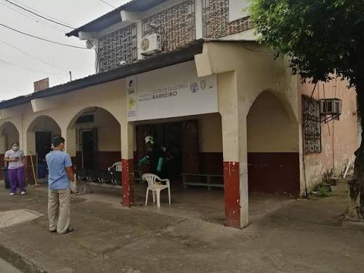
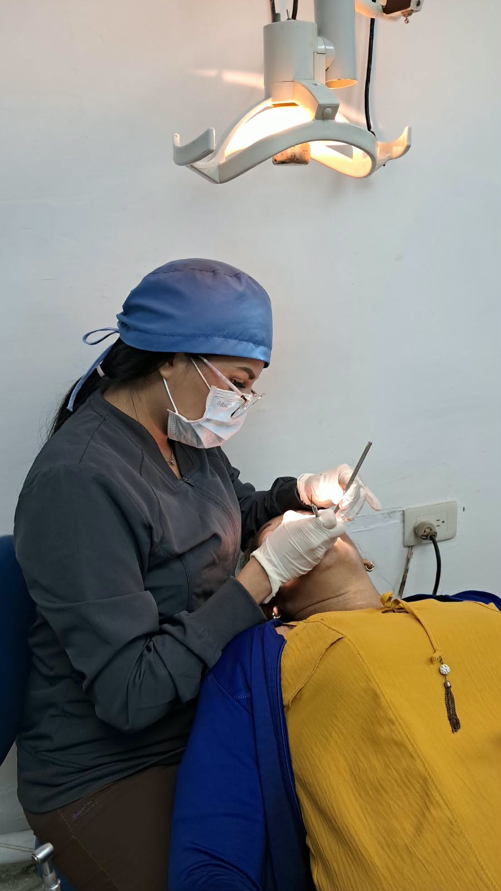

Quiénes somos
Somos el establecimiento de salud del primer nivel de atención de la parroquia. Atendemos con respeto, sin importar la edad ni la condición de cada persona.
Importante: si es una emergencia, llame al 911 (llamar al 911).


Nuestros servicios
- Medicina general
- Control del embarazo y del niño sano
- Vacunación
- Odontología
- Entrega de medicinas
Cómo agendar una cita
- Llame al teléfono del subcentro o escriba por WhatsApp.
- Indique su nombre, número de cédula y el motivo de la consulta.
- Anote el día y la hora que le asignen.
- Llegue 15 minutos antes con su cédula.
Se recomienda llegar 15 minutos antes de la hora asignada.
Horarios de atención
| Servicio | Días | Horario |
|---|---|---|
| Medicina general | Lunes a viernes | 08:00 a 16:00 |
| Odontología | Martes y jueves | 08:00 a 12:00 |
| Vacunación | Miércoles | 09:00 a 13:00 |
Videos y avisos
Video: cómo llegar y qué traer
Aviso importante en audio
Si no puedes reproducir el audio, haz clic aquí para escucharlo.
Transcripción del audio: «Aviso a la comunidad: este miércoles habrá jornada de vacunación contra la influenza para adultos mayores, de nueve de la mañana a una de la tarde en el Subcentro de Salud. Traiga su cédula y su carnet de vacunas. La atención es gratuita».
Contacto y ubicación
- Llamar al subcentro: 099 999 9999
- Escribir un correo a subcentro@ejemplo.ec
- Enviar un mensaje por WhatsApp
Cómo llegar
Dirección de referencia: parroquia Barreiro, cantón Babahoyo, provincia de Los Ríos.